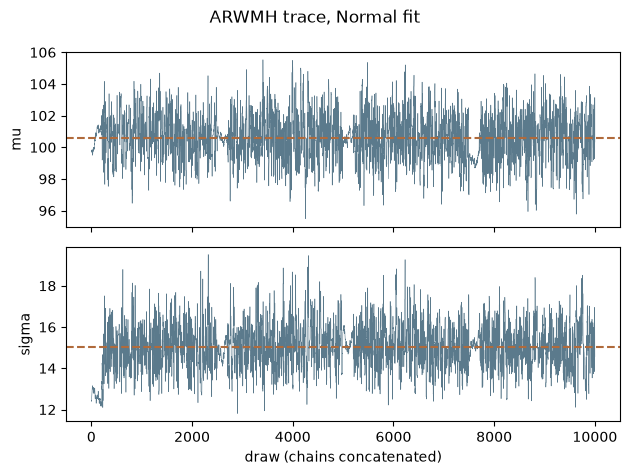
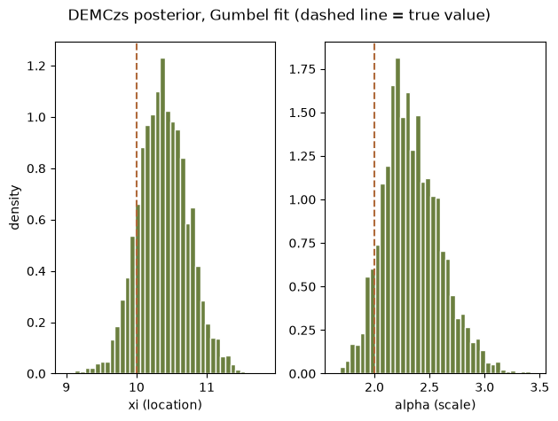

import time
import matplotlib.pyplot as plt
import numpy as np
import pandas as pd
import corehydropy as ch
print("Setup complete")Setup completeLanguage: Python (Jupyter notebook) - R version
Ported from 05_mcmc_adaptive.ipynb in the USACE-RMC Numerics-Python-Examples repository (0BSD licensed). The upstream notebook drives the C# Numerics.dll through pythonnet; this version uses corehydropy, whose compiled core is a validated C++ port of the same library. The seeded data and every posterior summary printed below are bit-identical to the R version of this example, which runs the same core stream. Comparisons against the upstream notebook’s printed posteriors are statistical rather than exact because the priors differ (see the reproduction check at the end).
The upstream notebook loads the CoreCLR runtime through pythonnet, resolves Numerics.dll, wraps a Python log-likelihood in a .NET LogLikelihood delegate, builds a List[IUnivariateDistribution] of priors, and sets ParallelizeChains = False to avoid GIL contention. None of that exists here. ch.mcmc_sample fits a named distribution family to the data and returns the chains, acceptance rates, posterior summaries, and diagnostics in one call.
One honest difference to keep in mind throughout: the upstream notebook hand-picks its priors (Uniform(50, 150) for \(\mu\) and Uniform(5, 30) for \(\sigma\) in the Normal example). corehydropy does not expose custom priors; mcmc_sample always uses uniform priors spanning the family’s parameter constraints, exactly the C# GetParameterConstraints bounds. With data this informative the posteriors are nearly the same, but bit-comparison against the upstream outputs is impossible, so the reproduction check treats every upstream posterior value as a statistical comparison.
We start with the most basic adaptive sampler: Adaptive Random Walk Metropolis-Hastings, which tunes the proposal distribution automatically during warmup [1].
The proposal at iteration \(t\) uses a mixture:
\[ \theta^* \sim \begin{cases} \mathcal{N}\!\left(\theta, \, \frac{0.1^2}{d} \, I_d\right) & \text{with probability } \beta \\ \mathcal{N}\!\left(\theta, \, \frac{2.38^2}{d} \, \hat{\Sigma}_t\right) & \text{with probability } 1-\beta \end{cases} \]
where \(d\) is the number of parameters, \(\beta = 0.05\) by default, \(\hat{\Sigma}_t\) is the running covariance of the chain’s accepted samples, and \(I_d\) is the identity matrix. The small identity component, also used for the first \(100 \times d\) samples, keeps the chain ergodic even when the adaptive covariance estimate is poor. Both proposal components are symmetric, so the acceptance criterion reduces to the plain posterior ratio, exactly as in RWMH.
When to use ARWMH:
We generate 100 seeded draws from a Normal(100, 15), then recover the parameters. The seed reproduces the C# Mersenne Twister stream bit-for-bit, so data matches the upstream notebook’s synthetic data and the R twin exactly.
true_mu = 100
true_sigma = 15
data = ch.Distribution("Normal", [true_mu, true_sigma]).random(100, seed=1234)
print(f"first draw: {data[0]}, sample mean: {np.mean(data):.3f}")
arwmh = ch.mcmc_sample(
data, distribution="Normal", sampler="ARWMH",
iterations=2500, warmup=800, chains=4, thinning=1, seed=12345,
)
summary = pd.DataFrame({
"parameter": arwmh["parameters"],
"true": [true_mu, true_sigma],
"posterior mean": arwmh["posterior_mean"],
"posterior sd": arwmh["posterior_sd"],
"rhat": arwmh["rhat"],
"ESS": arwmh["ess"],
})
print("\nARWMH results")
print(summary.round(3).to_string(index=False))
print("\nacceptance rate by chain:", np.round(arwmh["acceptance_rates"], 3))first draw: 86.91533945543637, sample mean: 100.615
ARWMH results
parameter true posterior mean posterior sd rhat ESS
µ 100 100.657 1.523 1.000 1222.214
σ 15 15.097 1.127 1.004 1158.488
acceptance rate by chain: [0.405 0.436 0.444 0.441]The acceptance rates sit near the 0.3 to 0.4 range that is close to optimal for random-walk samplers in low dimensions, with no manual tuning. Trace plots confirm the chains mix well around the posterior mean:
mu_draws = np.concatenate([c[:, 0] for c in arwmh["chains"]])
sigma_draws = np.concatenate([c[:, 1] for c in arwmh["chains"]])
fig, axes = plt.subplots(2, 1, sharex=True)
for ax, draws, name in zip(axes, [mu_draws, sigma_draws], ["mu", "sigma"]):
ax.plot(draws, linewidth=0.4, color="#5b7a8c")
ax.axhline(np.mean(draws), color="#b06a3b", linestyle="--", linewidth=1.5)
ax.set_ylabel(name)
axes[1].set_xlabel("draw (chains concatenated)")
fig.suptitle("ARWMH trace, Normal fit")
plt.tight_layout()
plt.show()
Differential Evolution MCMC (DEMCz) is a population-based sampler [2]. DEMCz with snooker update (DEMCzs) is an enhanced version with better mixing.
DEMCz generates proposals from the difference of two past states drawn from a population matrix \(Z\), a memory of past states from all chains:
\[ \theta^*_i = \theta_i + \gamma \, (z_{R_1} - z_{R_2}) + e \]
where \(\gamma = 2.38 / \sqrt{2d}\) is the default jump rate, \(z_{R_1}\) and \(z_{R_2}\) are two randomly selected past states, and \(e \sim \mathcal{N}(0, b^2)\) is a small noise perturbation with \(b = 10^{-3}\). With probability 0.1 the jump rate is set to \(\gamma = 1\), which jumps the full difference between two past states and lets the chain bridge separated modes. The population matrix learns the scale and orientation of the posterior on its own, so no proposal covariance needs to be specified. The snooker update in DEMCzs adds proposals along the line through the current state and a random past state, which further improves mixing in awkward geometries.
When to use DEMCz or DEMCzs:
The upstream notebook’s advice holds here too: DEMCzs is the fastest and most robust of these samplers, and the best adaptive method to default to. It is also the default sampler used by the *_analysis functions elsewhere in this package.
demczs_norm = ch.mcmc_sample(
data, distribution="Normal", sampler="DEMCzs",
iterations=2500, warmup=800, chains=4, thinning=1, seed=12345,
)
summary = pd.DataFrame({
"parameter": demczs_norm["parameters"],
"true": [true_mu, true_sigma],
"posterior mean": demczs_norm["posterior_mean"],
"posterior sd": demczs_norm["posterior_sd"],
"rhat": demczs_norm["rhat"],
"ESS": demczs_norm["ess"],
})
print("DEMCzs results")
print(summary.round(3).to_string(index=False))
print("\nacceptance rate by chain:", np.round(demczs_norm["acceptance_rates"], 3))DEMCzs results
parameter true posterior mean posterior sd rhat ESS
µ 100 100.644 1.524 1.000 1219.627
σ 15 14.997 1.065 1.005 1128.488
acceptance rate by chain: [0.369 0.354 0.36 0.362]Different samplers have different strengths. We compare all five adaptive samplers the port exposes (plain RWMH and SNIS are also available through the same interface):
Hamiltonian Monte Carlo augments the parameter space with momentum variables \(\phi\) and simulates Hamiltonian dynamics to generate distant, high-quality proposals [3][4]:
\[ H(\theta, \phi) = U(\theta) + K(\phi) = -\log \pi(\theta) + \frac{1}{2} \phi^T M^{-1} \phi \]
where \(U(\theta)\) is the potential energy (negative log-posterior), \(K(\phi)\) is the kinetic energy, and the mass matrix \(M\) is diagonal in this implementation. HMC is very efficient on smooth posteriors (low autocorrelation, fast exploration) but needs gradients, is less robust to discontinuities, and its trajectory length must be tuned by hand.
The No-U-Turn Sampler removes HMC’s most sensitive tuning parameter, the number of leapfrog steps, by growing the trajectory until it starts to double back on itself [5]. It builds a balanced binary tree of leapfrog states and stops when the U-turn criterion triggers:
\[ (\theta^+ - \theta^-) \cdot \phi^- < 0 \quad \text{or} \quad (\theta^+ - \theta^-) \cdot \phi^+ < 0 \]
where \(\theta^{\pm}\) are the trajectory endpoints and \(\phi^{\pm}\) their momenta. Step size is adapted automatically by dual averaging, which makes NUTS the recommended gradient-based sampler for most problems.
A compact guide:
| Sampler | Best for | Notes |
|---|---|---|
| ARWMH | 2-20 parameters, correlated parameters | Sound default, no tuning |
| DEMCz | High dimensions, multimodal posteriors | Population supplies the proposal scale |
| DEMCzs | Same as DEMCz | Fastest and most robust; default to this |
| HMC | Smooth, differentiable posteriors | Needs step size and step count tuning |
| NUTS | Smooth posteriors, no tuning appetite | Self-tuning HMC, costlier per draw |
We fit a Gumbel distribution to seeded synthetic data with all five samplers. The Gumbel is a good test case for the gradient-based samplers because its log-density is smooth and cheap to differentiate numerically, so HMC and NUTS avoid the step-size thrashing that heavier-tailed families can induce. HMC and NUTS get smaller iteration budgets because each of their iterations costs many gradient evaluations.
true_xi = 10.0 # location
true_alpha = 2.0 # scale
gumbel_data = ch.Distribution("Gumbel", [true_xi, true_alpha]).random(50, seed=12345)
print(f"first draw: {gumbel_data[0]}, sample mean: {np.mean(gumbel_data):.3f}")
settings = {
"ARWMH": dict(iterations=2500, warmup=800, chains=4),
"DEMCz": dict(iterations=2500, warmup=800, chains=4),
"DEMCzs": dict(iterations=2500, warmup=800, chains=4),
"HMC": dict(iterations=2000, warmup=600, chains=2),
"NUTS": dict(iterations=1200, warmup=400, chains=2),
}
runs = {}
rows = []
for name, cfg in settings.items():
start = time.perf_counter()
r = ch.mcmc_sample(
gumbel_data, distribution="Gumbel", sampler=name,
thinning=1, seed=12345, **cfg,
)
elapsed = time.perf_counter() - start
runs[name] = r
rows.append({
"sampler": name,
"runtime (s)": round(elapsed, 2),
"xi mean": r["posterior_mean"][0],
"alpha mean": r["posterior_mean"][1],
"xi error": r["posterior_mean"][0] - true_xi,
"alpha error": r["posterior_mean"][1] - true_alpha,
"accept": float(np.mean(r["acceptance_rates"])),
"max rhat": float(np.max(r["rhat"])),
"min ESS": float(np.min(r["ess"])),
})
comparison = pd.DataFrame(rows)
print("\nSampler comparison")
print(comparison.round(3).to_string(index=False))first draw: 15.235041366837393, sample mean: 11.630
Sampler comparison
sampler runtime (s) xi mean alpha mean xi error alpha error accept max rhat min ESS
ARWMH 0.05 10.400 2.370 0.400 0.370 0.404 1.001 1197.919
DEMCz 0.03 10.393 2.358 0.393 0.358 0.347 1.001 1226.435
DEMCzs 0.03 10.397 2.351 0.397 0.351 0.350 1.003 1223.884
HMC 2.48 10.390 2.357 0.390 0.357 0.978 1.000 6001.348
NUTS 0.32 10.387 2.350 0.387 0.350 1.000 1.004 2845.550All five samplers agree on the posterior to two decimal places, matching the upstream notebook’s picture: the random-walk and population samplers finish in milliseconds, while the gradient-based samplers pay for numerical differentiation on every leapfrog step but return chains with very low autocorrelation (note the ESS relative to the number of draws). The posterior from DEMCzs:
best = runs["DEMCzs"]
xi_draws = np.concatenate([c[:, 0] for c in best["chains"]])
alpha_draws = np.concatenate([c[:, 1] for c in best["chains"]])
fig, axes = plt.subplots(1, 2)
for ax, draws, name, true in zip(
axes, [xi_draws, alpha_draws], ["xi (location)", "alpha (scale)"],
[true_xi, true_alpha],
):
ax.hist(draws, bins=40, density=True, color="#6b7f3f", edgecolor="white")
ax.axvline(true, color="#b06a3b", linestyle="--", linewidth=1.5)
ax.set_xlabel(name)
axes[0].set_ylabel("density")
fig.suptitle("DEMCzs posterior, Gumbel fit (dashed line = true value)")
plt.tight_layout()
plt.show()
The upstream notebook ends with two performance benchmarks against PyMC’s NUTS sampler. Those sections depend on a separate probabilistic-programming stack and compare pythonnet call overhead rather than the library itself, so they are not ported here.
In this notebook you:
[1] H. Haario, E. Saksman, and J. Tamminen, “An adaptive Metropolis algorithm,” Bernoulli, vol. 7, no. 2, pp. 223-242, 2001.
[2] C. J. F. ter Braak and J. A. Vrugt, “Differential evolution Markov chain with snooker updater and fewer chains,” Statistics and Computing, vol. 18, no. 4, pp. 435-446, 2008.
[3] R. M. Neal, “MCMC using Hamiltonian dynamics,” in Handbook of Markov Chain Monte Carlo. CRC Press, 2011.
[4] M. Betancourt, “A conceptual introduction to Hamiltonian Monte Carlo,” arXiv preprint arXiv:1701.02434, 2017.
[5] M. D. Hoffman and A. Gelman, “The No-U-Turn Sampler: Adaptively setting path lengths in Hamiltonian Monte Carlo,” Journal of Machine Learning Research, vol. 15, no. 47, pp. 1593-1623, 2014.
The seeded data draws are exact: the port reproduces the C# Mersenne Twister stream bit-for-bit, and the R twin prints the same values. Every posterior comparison against the upstream notebook is statistical, for two reasons stated honestly: the upstream hand-picks its priors (Uniform(50, 150) and Uniform(5, 30) for the Normal; Uniform(0, 20) and Uniform(0.5, 10) for the Gumbel) while this port always uses the family’s constraint-based uniform priors, and the chain settings differ, so the sampler streams cannot be bit-compared. Two posterior-mean literals are additionally asserted as exact cross-language checks: the R twin computes the identical values from the same core stream.
| Quantity | Upstream C# | This port | Status |
|---|---|---|---|
| ARWMH Normal posterior mean of mu | 100.611 | ~100.657 | statistical |
| ARWMH Normal posterior mean of sigma | 15.053 | ~15.097 | statistical |
| DEMCzs Normal posterior mean of mu | 100.596 | ~100.644 | statistical |
| DEMCzs Normal posterior mean of sigma | 15.037 | ~14.997 | statistical |
| Gumbel xi posterior mean, all 5 samplers | 10.375 to 10.422 | 10.387 to 10.400 | statistical |
| Gumbel alpha posterior mean, all 5 samplers | 2.335 to 2.358 | 2.350 to 2.370 | statistical |
| Seeded Normal / Gumbel data draws | (not printed upstream) | bit-exact vs C# stream and R twin | exact |
| ARWMH Normal and DEMCzs Gumbel posterior means | (cross-language identity) | identical in the R twin | exact |
The cell below fails the notebook if any check drifts.
# Upstream: 05_mcmc_adaptive.ipynb, cell 7 (ARWMH Normal), cell 9 (DEMCzs Normal),
# cell 12 (Gumbel sampler-comparison table).
# exact: seeded data, bit-identical to the C# Mersenne Twister stream and the R twin
assert data[0] == 86.91533945543637
assert gumbel_data[0] == 15.235041366837393
# exact: cross-language identity, the R twin asserts these same posterior-mean literals
assert arwmh["posterior_mean"][0] == 100.6571453618418
assert arwmh["posterior_mean"][1] == 15.096506821290019
assert runs["DEMCzs"]["posterior_mean"][0] == 10.396547639985409
assert runs["DEMCzs"]["posterior_mean"][1] == 2.350782938160503
# statistical: priors and chain settings differ from upstream (see above), so we
# assert agreement within 5% of the upstream printed values plus CI coverage of truth.
assert abs(arwmh["posterior_mean"][0] / 100.611 - 1) < 0.05
assert abs(arwmh["posterior_mean"][1] / 15.053 - 1) < 0.05
assert abs(demczs_norm["posterior_mean"][0] / 100.596 - 1) < 0.05
assert abs(demczs_norm["posterior_mean"][1] / 15.037 - 1) < 0.05
for r in (arwmh, demczs_norm):
assert r["posterior_lower_ci"][0] <= true_mu <= r["posterior_upper_ci"][0]
assert r["posterior_lower_ci"][1] <= true_sigma <= r["posterior_upper_ci"][1]
upstream_gumbel = {
"ARWMH": (10.422, 2.342), "DEMCz": (10.395, 2.349), "DEMCzs": (10.375, 2.335),
"HMC": (10.379, 2.358), "NUTS": (10.418, 2.356),
}
for name, (xi_up, alpha_up) in upstream_gumbel.items():
r = runs[name]
assert abs(r["posterior_mean"][0] / xi_up - 1) < 0.05
assert abs(r["posterior_mean"][1] / alpha_up - 1) < 0.05
assert r["posterior_lower_ci"][0] <= true_xi <= r["posterior_upper_ci"][0]
assert r["posterior_lower_ci"][1] <= true_alpha <= r["posterior_upper_ci"][1]
# internally checkable convergence: seeded, so these are fixed values
assert float(np.max(r["rhat"])) < 1.05
assert float(np.min(r["ess"])) > 500
print("All reproduction checks passed.")All reproduction checks passed.